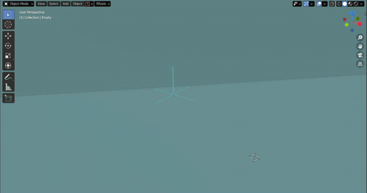
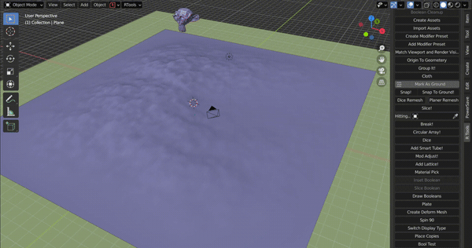
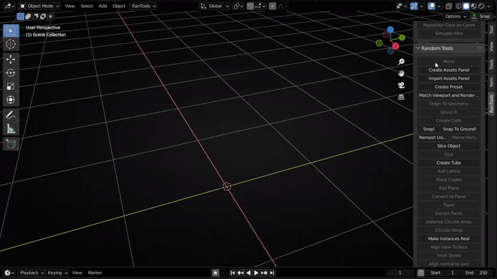
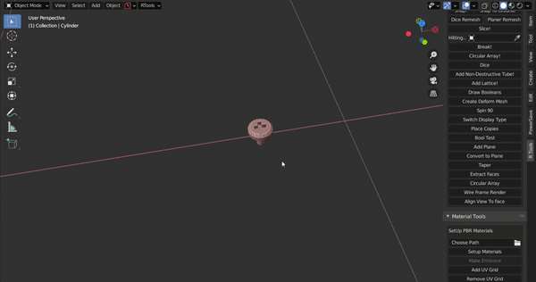
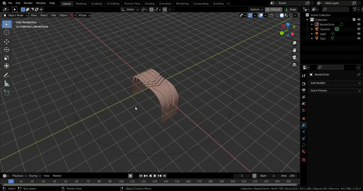
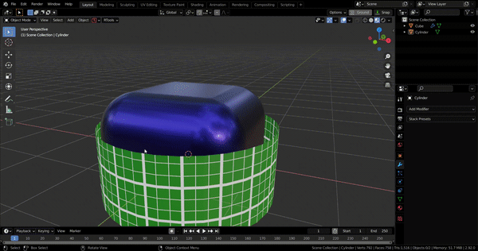
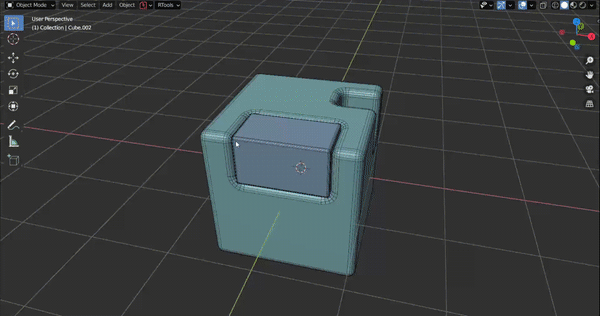
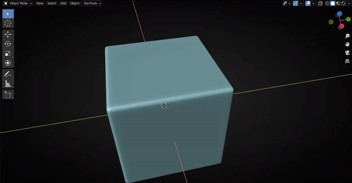
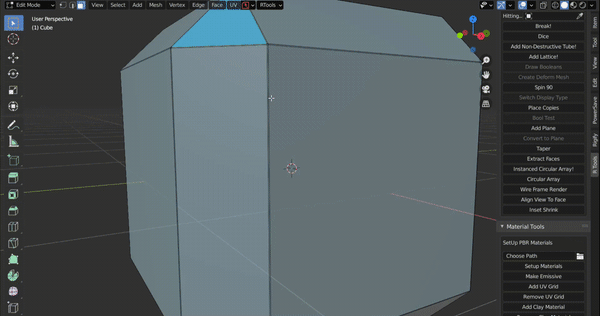

Random Tools¶
Mirror¶
Shortcut : ALT+E View Based Mirror . Mirror Axis is selected based on the viewing angle. It also tries to guess whether flipping is required based on the number of vertices and density, but if the guess is wrong, you can always hold down the Alt key and press X, Y, or Z to toggle flipping for those axes

Import Asset¶
ALT+L

If you click on the collection name, you can scroll with the mouse to select the asset
You can also create placeholders that are recognised and imported by the import function without having to select them in the import panel. For example, if you have a collection named “Plant”, you can place an empty named “Plant” anywhere in the scene, and when you select that empty and you press ALT +L, plants are immediately imported and you can scroll to choose which ones you want to have.

Match Viewport and Render Visibility¶
Click to adjust the render visibility of all objects in the scene to match their viewport visibility. CTRL to adjust the viewport visibility to match the render visibility.
Origin To Geometry¶
Set Origin of the selected active object to the center of the evaluated object i.e. considering all modifiers.
Origin To Bottom¶
Send origin to the lowest point of the object.

Snap And Snap To Ground¶
Snap : Snap objects to whatever is the first object below them. There are 4 types of snapping(Hold CTRL or SHIFT or ALT or nothing).Try which one works best for you. Snap to Ground: Snap objects to objects below them which are marked as ground.



 Note: UVs will be lost
Note: UVs will be lost
Create Tube¶
Adds a non-destructive tube to the scene. The tube is made entirely with modifiers and can be manipulated under the curve Tools sections.



Place Copies¶
Select the object you want to make copies of, then click anywhere to place a copy. Exit to cancel. Enter or right click to confirm

Add Plane¶
With a difference boolean selected click the Add Plane Button to add a plane in it’s place.


Modifier Presets¶
Stack Presets¶
Save complete modifier stacks as presets so you can add them at any time with just one click.
 The above example uses the active property (the value you set immediately after adding the preset) Screw Offset ( tube radius ). If you want to use the active property, you need to select the modifier you want to use (meaning it should be active (blue outline)), and while clicking “Create Preset”, you need to hold down the Ctrl key.
This is very useful for things you use very often (like beveling,solidifying or shrink wrapping ).
You can add presets that you use very often to the Quick Favorites menus for faster access.
I usually like to use the bevel modifier with weighted normals, so I created a preset for it and added it to the Quick Favorites to quickly add a bevel to any object.
Note that I selected the bevel modifier before clicking “Create Preset” to use it as an active property.
The above example uses the active property (the value you set immediately after adding the preset) Screw Offset ( tube radius ). If you want to use the active property, you need to select the modifier you want to use (meaning it should be active (blue outline)), and while clicking “Create Preset”, you need to hold down the Ctrl key.
This is very useful for things you use very often (like beveling,solidifying or shrink wrapping ).
You can add presets that you use very often to the Quick Favorites menus for faster access.
I usually like to use the bevel modifier with weighted normals, so I created a preset for it and added it to the Quick Favorites to quickly add a bevel to any object.
Note that I selected the bevel modifier before clicking “Create Preset” to use it as an active property.

Another very useful feature is that if you select an object when adding a preset, all object fields are set to use the selected object (modifiers are added to the active object). This is very useful for curves, shrinkwraps, or circular arrays.


Single Modifier Presets¶
Presets for individual modifiers are also possible. They can be created using the Create Preset panel. Enter the name under which you want to save the preset and select the modifier from the list for which you want to create the preset.Individual modifiers by default use active properties so you dont have to hold down CTRL.

Shrinkwrap with wrap method set to Project

Shrinkwrap with wrap method set to Tangent Normal

Interactive Modifier Adjust¶
Accessible from SHIFT +Q pie menu Allows interactive adjustment of modifier values. Move the mouse along the horizontal axis to adjust values. Press A to cycle between adjustable values.


Modifier Adjust Panel¶
Accessible via SHIFT +W pie menu. Displays only commonly used properties of modifiers. Option to hide boolean modifiers. Supports multiple objects, making it easier to copy values between modifiers on different objects.

Cloth¶
Cloth Simulations have been broken into 2 separate parts with Version 3.0. First is Remesh and second is the Simulation itself.
Remesh for Cloth¶
V3.0 comes with better remeshing options. Remesh Faces Individually : Before V3.0 all the selected faces were remeshed by project a grid from one fixed angle(normal of active face) and it was fine when all the faces had similar normals but it could not handle when selected faces were at greated angles like two sides of cube or all faces of a cylinder. This is where remesh faces individually comes in. It projects a grid from separate angles for separate faces. So you can even remesh a complete cylinder in one go if you like. Precise: By default when you have Remesh Faces Individually selected it groups faces into sets of faces with similar normals to save computational power and perform faster. But you can force it to remesh the faces truly Individually using the Precise checkbox.
Create Cloth¶
Once Remeshing is done click this button to start the simulation. You can change the parameters like stiffness,pressure and shrink from the lower left panel. Once you are happy you can simply pause the simulation and apply the modifier on the cloth object to get a destructive mesh.
Extract Faces¶
Click and drag to extract faces from the visible geometry.Right Click to confirm. Escape to Exit. Hold down CTRL to deselect.
Press C to use circle select for faster selection.

Press E to expand the selection to all the coplanar faces.

Extract->Inset->P-Cutter¶
Hold down CTRL while clicking to use Extract faces,Inset Shrink and P-Cutter combined modal.

Extract->Inset->Solidify¶
Hold down SHIFT while clicking to use Extract faces,Inset Shrink and Soldifiy combined modal.


Align View to Face¶
Better align view to face. Comparison between blender’s align to face vs RanTools align to face:
Blender |
RanTools |
|---|---|
 |
|

Circular Array¶
Add Circular Arrays with just few clicks. Select an object and click circular array button to add a circular array. Change Count,radius and axis in the lower left panel.
 If you want to array arround another object first select the object you want to array and then the object you want to array arround and click circular array.
If you want to array arround another object first select the object you want to array and then the object you want to array arround and click circular array.

Instance Based Circular Array¶
Create a circular array by instancing a copy of the object on vertices of a circle. These copies can not be used for booleans but if you want you can convert the instances into real objects using Make Instances Real feature. Major advantage of using instance based array is less memory usage.

Project from View with correct aspect ratio¶
By default when we use Project from view and the image in image editor is not a square the UVs come out stretched this can be solved using Project from View from RanTools. This option is present in the UV menu(U).
Blender’s Internal |
RanTools |
|---|---|
|
|